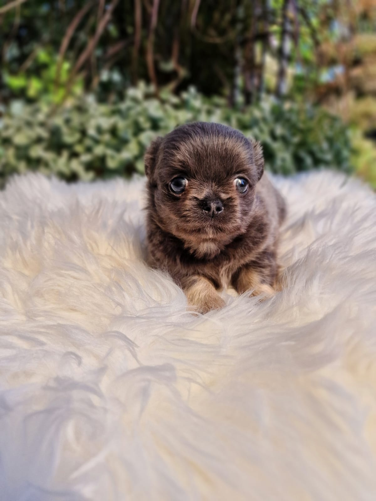

Zdrowie zaczyna się w hodowli
Zanim powiemy o szczepieniach i profilaktyce, jedna ważna rzecz: na zdrowie psa najmocniej pracuje się, zanim ten pies się urodzi. Zdrowi, dobrze dobrani rodzice, spokojna ciąża suczki, właściwe odchowanie miotu, odrobaczanie i szczepienia w terminie, to fundament, którego później nie da się „dorobić”.
Dlatego nasze szczenięta opuszczają dom z książeczką zdrowia dokumentującą wykonane szczepienia i odrobaczenia, po kontrolach weterynaryjnych i najwcześniej po 8. tygodniu życia. Twoja rola zaczyna się od dnia odbioru, i o niej jest ten poradnik.
Uwaga: wszystkie schematy poniżej są orientacyjne, ostateczny kalendarz zawsze ustala Twój lekarz weterynarii, znający konkretnego psa.
Szczepienia: kalendarz pierwszego roku
Szczepienia chronią przed chorobami, które dla szczeniąt miniaturowych bywają śmiertelne, z parwowirozą i nosówką na czele. Typowy schemat wygląda tak:
| Wiek szczeniaka | Szczepienie (orientacyjnie) |
|---|---|
| 6-8 tygodni | pierwsze szczepienie (m.in. nosówka, parwowiroza), wykonywane jeszcze u nas |
| 9-12 tygodni | szczepienie skojarzone, dawka przypominająca |
| 12-16 tygodni | kolejna dawka przypominająca + wścieklizna (w Polsce obowiązkowa dla psów powyżej 3. miesiąca życia) |
| co roku | przypomnienia według zaleceń lekarza (wścieklizna, obowiązkowo co roku) |
Do zakończenia cyklu szczepień szczeniak nie powinien mieć kontaktu z miejscami odwiedzanymi przez obce psy, świat pokazujemy mu wtedy „z ramion”, o czym piszemy w poradniku o socjalizacji. Pełną odporność maluch osiąga około 2 tygodni po ostatniej dawce, wtedy zaczynają się prawdziwe spacery.
Odrobaczanie i ochrona przed pasożytami
- Odrobaczanie: szczenięta odrobacza się regularnie już od pierwszych tygodni życia (te zabiegi wykonujemy u nas i wpisujemy do książeczki). Po odbiorze kontynuuj według zaleceń weterynarza, u dorosłych psów standardem jest odrobaczanie co ok. 3 miesiące albo okresowe badanie kału i odrobaczanie celowane.
- Pchły i kleszcze: od wiosny do późnej jesieni (a przy ciepłych zimach, cały rok) stosuj ochronę: krople spot-on, obrożę lub tabletki. Preparat musi być dobrany do wagi psa, u 2-kilogramowej miniaturki przedawkowanie jest realnym ryzykiem, więc nigdy „na oko” i nigdy preparatem dla kota lub dużego psa.
- Kleszcze wyjmuj od razu kleszczołapką, obserwuj miejsce ukąszenia i zachowanie psa, babeszjoza u tak małego organizmu rozwija się szybko.
Na co uważać u ras miniaturowych
Chihuahua i maltańczyki są generalnie zdrowymi, długowiecznymi rasami (12-18 lat!), ale mają swoje typowe słabe punkty. Znając je, większości problemów po prostu zapobiegniesz:
- Zwichnięcie rzepki (luksacja), najczęstsza przypadłość ortopedyczna małych ras. Profilaktyka: szczupła sylwetka, zakaz skoków z kanapy i łóżka (schodki!), dywaniki na śliskich panelach. Objaw: nagłe „podskakiwanie” na trzech łapkach, do konsultacji z weterynarzem.
- Zapadalność tchawicy, dlatego miniaturki prowadzimy w szelkach, nigdy na obroży. Suchy, „gęsi” kaszel przy ekscytacji warto skonsultować.
- Zęby i przetrwałe mleczaki, temat numer jeden; szczegóły w poradniku pielęgnacyjnym. Kontroluj wymianę zębów między 4. a 7. miesiącem.
- Hipoglikemia u szczeniąt, regularne posiłki to podstawa; objawy i pierwszą pomoc opisujemy w poradniku o żywieniu.
- Molera u chihuahua, niezarośnięte ciemiączko, cecha znana w rasie; u większości szczeniąt zarasta z wiekiem. Praktyczny wniosek: chronić głowę malucha przed urazami i poinformować o tym dzieci.
- Wrażliwość na zimno, krótkie spacery w mróz i ubranko to nie moda, tylko fizjologia małego ciała.
Rada z naszej hodowli
Wybierz lekarza weterynarii, który na co dzień pracuje z rasami miniaturowymi, od dawkowania leków po znieczulenie do zabiegu, przy 2 kilogramach masy ciała doświadczenie robi ogromną różnicę. Warto też mieć zapisany telefon najbliższej lecznicy całodobowej, zanim będzie potrzebny.
Sygnały alarmowe, kiedy nie czekać
Jedź do weterynarza od razu, gdy widzisz:
- apatię i osowiałość „nie do poznania”, u miniaturek stan potrafi zmieniać się z godziny na godzinę,
- wymioty lub biegunkę u szczeniaka (u dorosłego psa: utrzymujące się ponad dobę, z krwią lub z apatią),
- odmowę jedzenia i picia przez ponad 12-24 godziny,
- objawy hipoglikemii: chwiejny chód, drżenie, blade dziąsła, drgawki,
- duszność, intensywny kaszel, sine dziąsła,
- podejrzenie zjedzenia czegoś toksycznego (czekolada, ksylitol, leki…), nie czekaj na objawy,
- uraz po upadku lub skoku, nawet jeśli pies „tylko” kuleje,
- skomlenie przy dotyku, napięty brzuszek, nienaturalna postawa.
Zasada dla miniaturek jest prosta: lepiej pojechać raz za wcześnie niż raz za późno. Mały organizm ma małe rezerwy.
Profilaktyka na lata, prosty plan
- Raz w roku wizyta kontrolna, ze szczepieniem, przeglądem zębów i osłuchaniem serca (u starszych psów małych ras warto kontrolować zastawki).
- Codziennie: świeża woda, regularne posiłki, ruch i… obserwacja. Nikt nie zna Twojego psa lepiej niż Ty.
- Co tydzień: szybki przegląd, oczy, uszy, zęby, skóra, łapki, waga „na rękę”.
- Cały rok: ochrona przeciwpasożytnicza według kalendarza, szczupła sylwetka (otyłość to cichy zabójca stawów i serca miniaturek).
- Temat sterylizacji/kastracji omów indywidualnie z weterynarzem, decyzja i jej termin zależą od zdrowia i rozwoju konkretnego psa.
I na koniec: po odbiorze maluszka jesteśmy z Tobą w kontakcie. Jeśli coś Cię niepokoi, a nie masz pewności, czy to „temat na weterynarza”, zadzwoń, pomożemy ocenić sytuację. Znamy nasze szczenięta i ich linie od pokoleń.

Najczęstsze pytania
Czy szczepienia są bezpieczne dla tak małych psów?
Tak, korzyści wielokrotnie przewyższają ryzyko, a choroby, przed którymi chronią (parwowiroza, nosówka), są dla miniaturowych szczeniąt śmiertelnie groźne. Po szczepieniu maluch może być przez dobę ospały; niepokojące objawy (obrzęk pyszczka, wymioty) zgłoś lekarzowi od razu.
Czy chihuahua i maltańczyk muszą być czipowane?
Czip to malutki transponder wszczepiany podskórnie, zabieg jak zastrzyk. Daje możliwość identyfikacji psa, gdyby się zgubił, i jest wymagany m.in. do paszportu i podróży zagranicznych. Gorąco go polecamy; wykonasz go u swojego weterynarza, często przy okazji szczepienia.
Ile żyją chihuahua i maltańczyki?
To jedne z najbardziej długowiecznych ras: chihuahua zwykle 12-18 lat, maltańczyki 12-15. Największy wpływ na długość życia mają: szczupła sylwetka, zadbane zęby, profilaktyka i szybkie reagowanie na objawy. Czyli, dobra codzienność.
Czy warto ubezpieczyć psa?
Ubezpieczenie kosztów leczenia to rosnąco popularna opcja, przy poważnym zabiegu (np. ortopedia po urazie) rachunki potrafią być wysokie. Alternatywą jest własna „poduszka” odkładana co miesiąc na psie konto. Wybierz formę, która pasuje Twojemu budżetowi, ważne, żeby nagły wydatek nie decydował o leczeniu.
Masz pytania albo szukasz swojego maluszka? Zadzwoń pod numer 601 074 022, powiemy, co aktualnie mamy, kiedy planujemy kolejny miot i chętnie doradzimy w każdym temacie z tego poradnika.
Zadzwoń